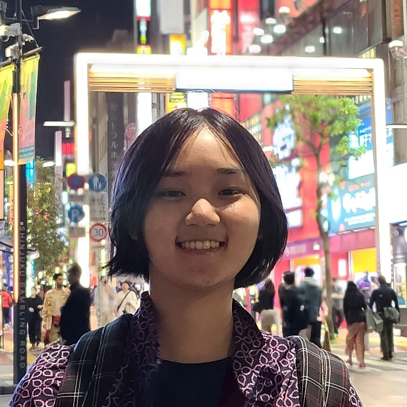
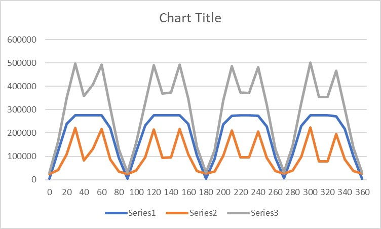
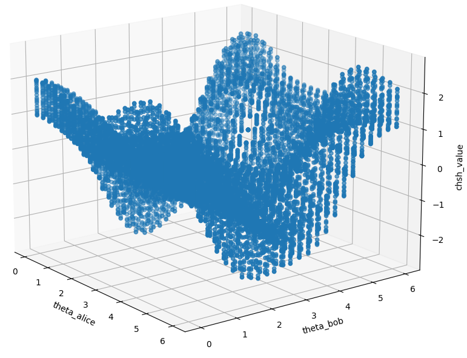

Photo taken in Shinjuku, Tokyo.
Michelle Ding's Homepage
I am a CS PhD student at the University of Texas at Austin where I am fortunate to be advised by Scott Aaronson. Before that I studied Mathematics and Computer Science at the same institution under the Turing Scholars Honors Program.
Curriculum Vitae
Graduate Research
Undergraduate Research
April 2025: Undergraduate Honors Thesis: Peaked Boson Sampling: towards efficiently verifiable and NISQ-able quantum advantage
Thesis
Poster
Slides
GitHub
Batman-like quantum optics calibration attempt
Jun 2024: George Tsoukalas, Jasper Lee, John Jennings, Jimmy Xin, MD, Michael Jennings, Amitayush Thakur, Swarat Chaudhuri. PutnamBench: Evaluating Neural Theorem-Provers on the Putnam Mathematical Competition
arXiv:2407.11214
GitHub
Apr 2024: Neil A., MD, Aadarsh N. Formal Verification of QEC
PDF
GitHub
Dec 2023: MD et al. IFML Retrieval Augmented Generation Models
Manuscript
Jun 2022: Quantum State Tomography Experiments on PBS
Poster
CHSH simulation results for 3 bases
{kind=link}